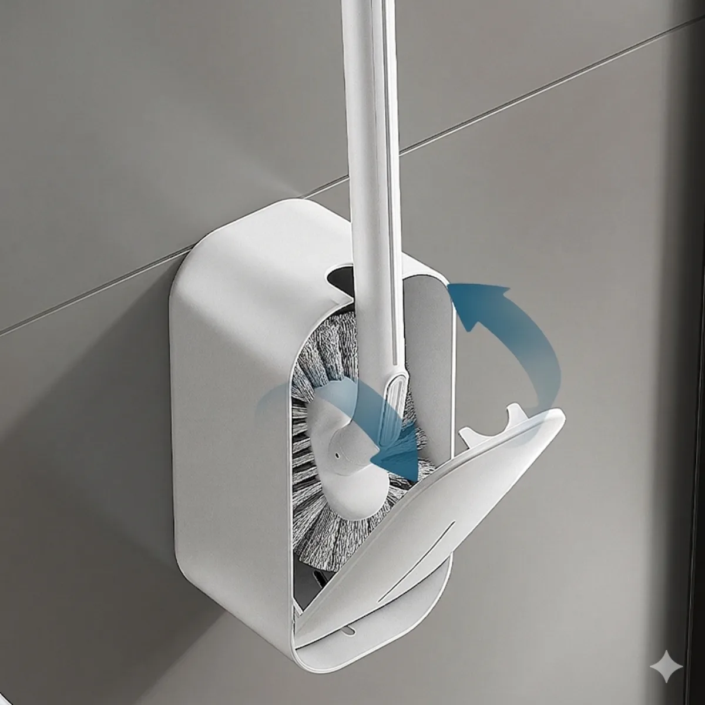
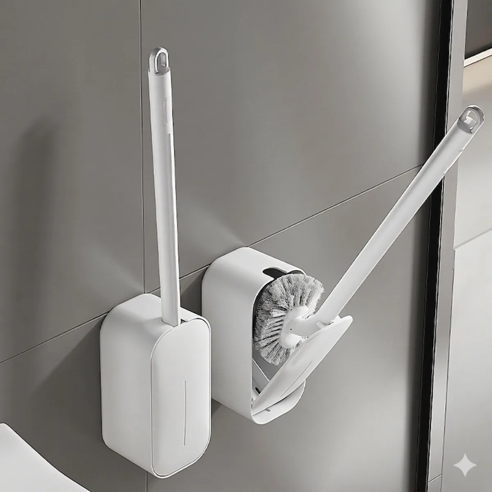
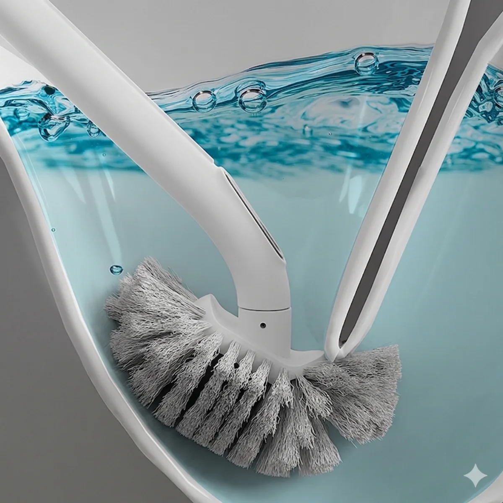
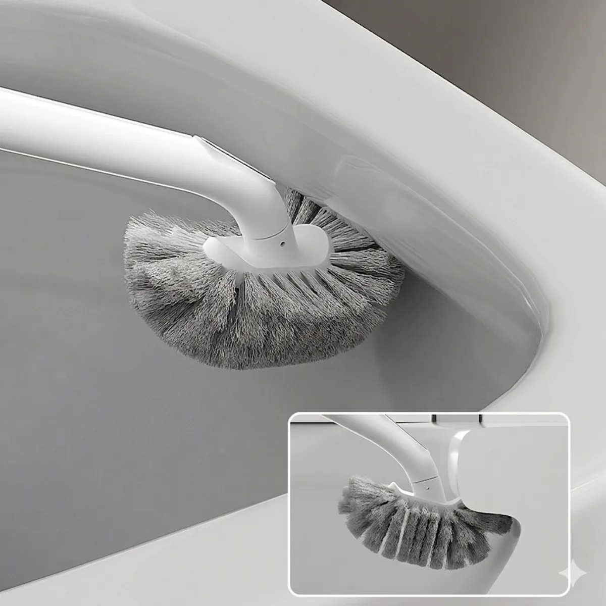
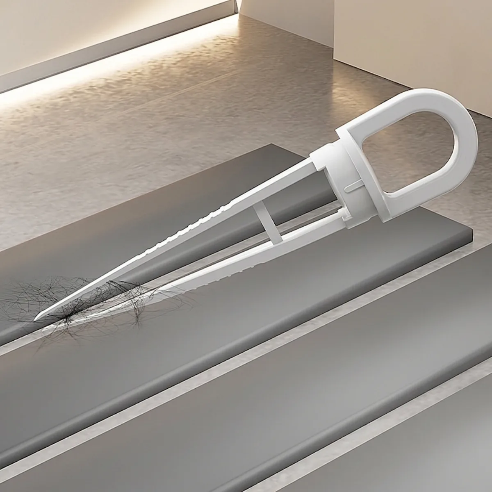
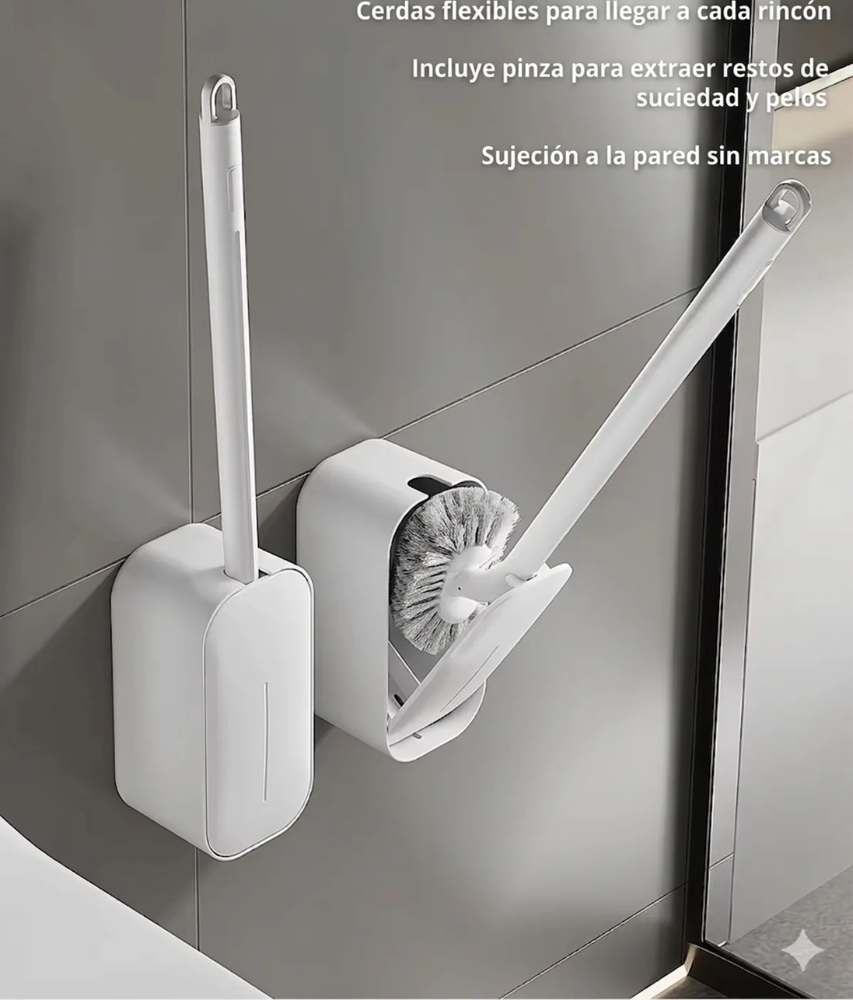
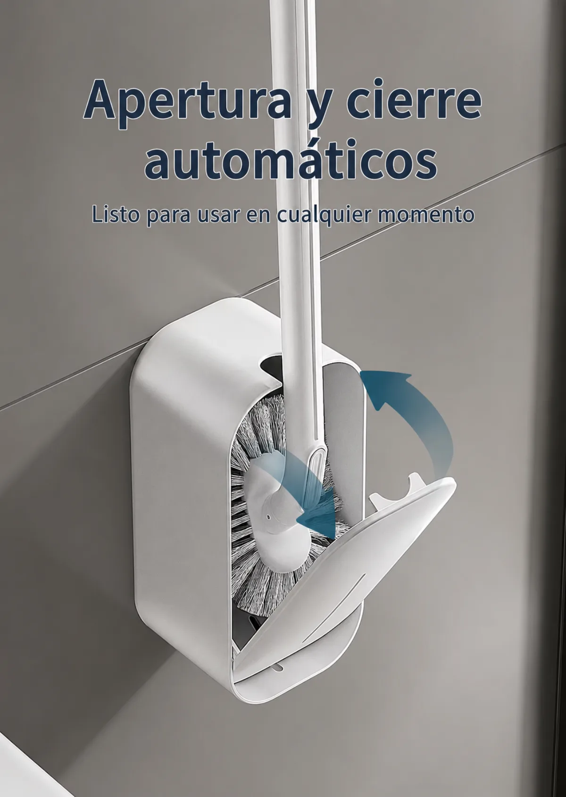
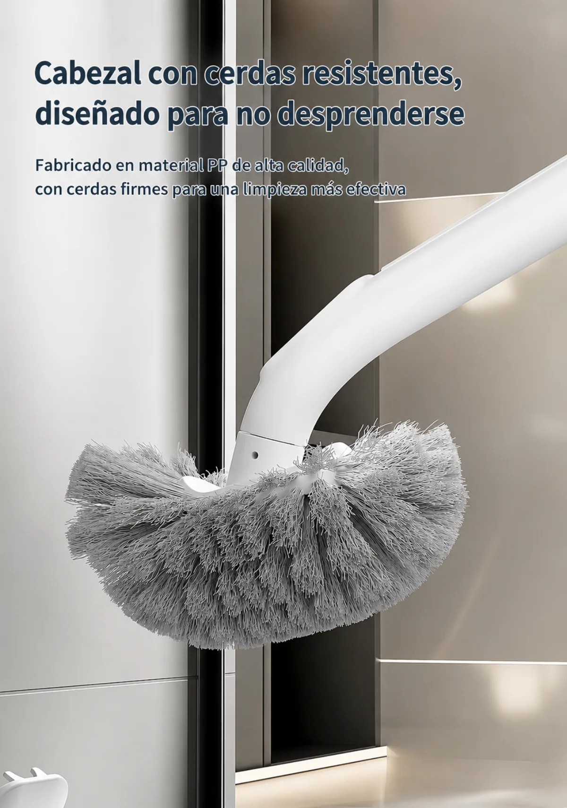
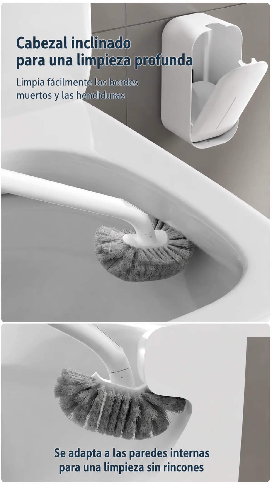
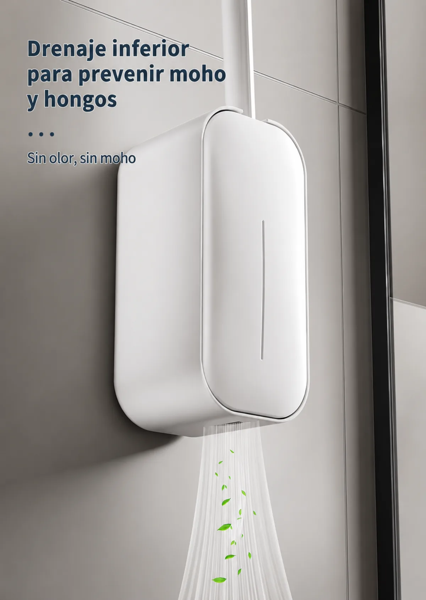
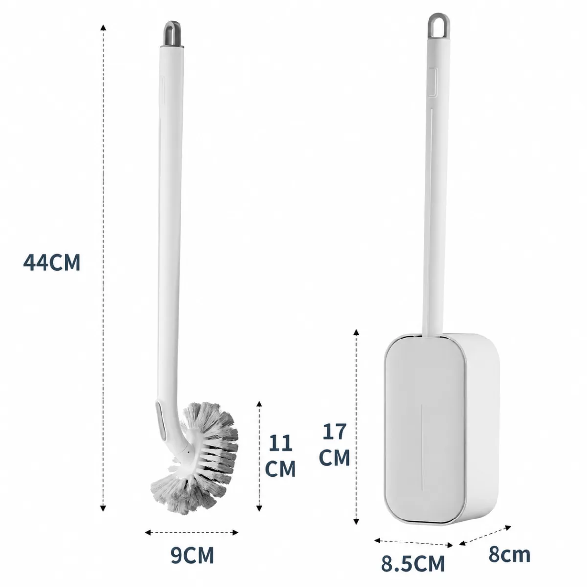
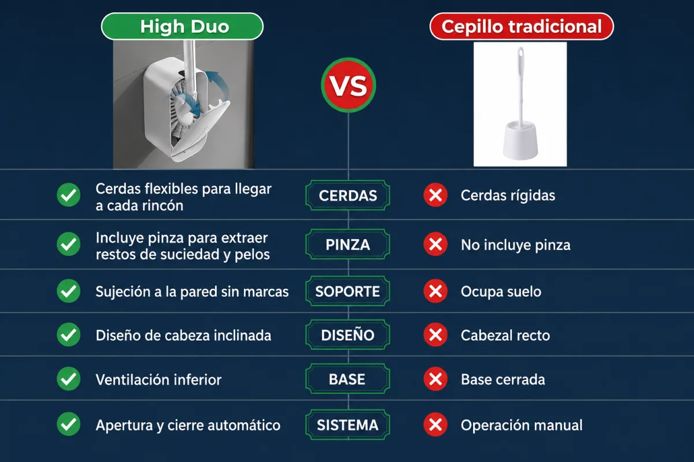
Cierre automático · Soporte con drenaje y ventilación
Pago 100% seguro · Envío gratis · Protección al comprador
Mantené tu baño limpio, ordenado e higiénico con este innovador cepillo para inodoro de diseño moderno. Su cabezal flexible e inclinado permite llegar fácilmente a los rincones más difíciles, logrando una limpieza profunda donde los cepillos tradicionales no llegan.
Incluye un práctico soporte de pared con sistema de ventilación y drenaje inferior que favorece el secado rápido, ayudando a evitar malos olores, humedad y acumulación de hongos. Su diseño compacto y elegante combina perfectamente con cualquier estilo de baño.
Beneficios: mayor higiene en el baño, secado más rápido que los porta cepillos convencionales, ocupa poco espacio, instalación sencilla sin herramientas y un diseño elegante que mejora la estética del baño. Ideal para hogares, oficinas, departamentos, hoteles y locales comerciales.
Medidas del cepillo: alto total 44 cm · diámetro del cabezal 9 cm · altura del cabezal 11 cm.
Medidas del soporte: alto 17 cm · ancho 8,5 cm · profundidad 8 cm.
¿Qué incluye? 1 cepillo para inodoro · 1 soporte de pared con drenaje · adhesivo de fijación.
¿Se puede pegar en azulejos? Sí, el soporte autoadhesivo está diseñado para superficies lisas como cerámicos, porcelanatos, vidrio y azulejos.
¿El soporte acumula agua? No. Posee drenaje inferior y ventilación para favorecer el secado y evitar la acumulación de humedad.